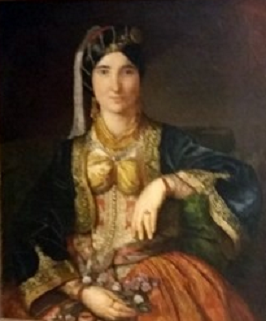

|
|
| Ова песма је типичан пример „севдалинке“, од турске речи „севдах“ што значи „Страсна љубав“. Реч "ашик" што значи "љубавник" је такође турска, као и реч "чимбир", "марамица", чији је умањилац "чимбирчић". Ова учесталост турцизама је нарочито висока у песмама Босне, земље у којој Ислам је врло рано постао главна религија, која је фаворизовала културну размену са османским светом.Ова позајмљивања из страног језика, далеко од тога да се сматрају деградацијом словенског језика, дала су му (и дају му joш увек) необичан звук. што cy ценили љубитељи поезије.<бр> За разлику од следеће песме "Ала имаш оћи" која је одлучно бурлескна, ова песма описује страст на озбиљан начин. |
Cette chanson est un exemple -type de "sevdalinka", du mot turc "sevdah" qui signifie "ivresse d'amour". Le mot "ašik" qui signifie "amoureux est également turc, tout comme d'ailleurs le mot "čimbir", "mouchoir", dont "Čimbirčic" est le diminutif. Cette fréquence des turcismes est particulièrement élevée dans les chants de Bosnie, pays où l'Islam est, assez tôt, devenu la religion principale, ce qui favorisait les échanges culturels avec le monde ottoman. Ces emprunts à une langue étrangère loin d'être considérés comme une dégradation de la langue slave, lui donnaient (et lui donnent toujours) une sonorité insolite très appréciée des amateurs de poésie. Contrairement au chant suivant "Ala imaš oći" qui est résolument burlesque, ce poème décrit la passion sur le mode sérieux. |